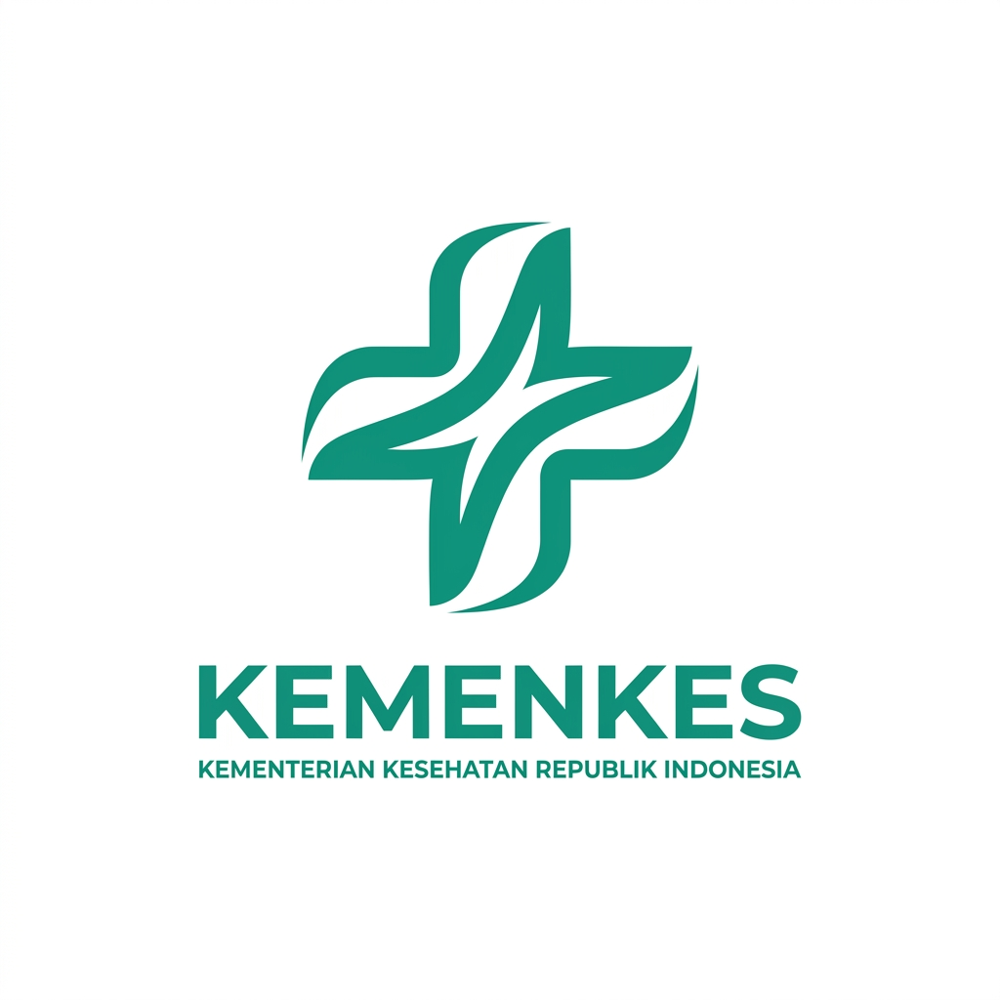

Pratinjau Cetak Laporan Posyandu
Posyandu Bunga Tanjung VII • Periode September 2026 • Format A4 Landscape Resmi

| No | NIK Balita | Nama Balita | L/P | Tgl Lahir | Umur | Nama Ibu / Ortu | Tgl Ukur | BB (kg) | TB (cm) | LK (cm) | ASI | KMS | Z-Score BB/U | Z-Score TB/U | Z-Score BB/TB | Rekomendasi PMT | Status / Diagnosa | Catatan |
|---|---|---|---|---|---|---|---|---|---|---|---|---|---|---|---|---|---|---|
| 1 | 1171010406250001 | Muhammad Al-Fatih Pratama | L | 04/06/2025 | 12 bln | Cut Annisa Zahra | 05/09/2026 | 18.50 | 74.0 | 45.0 | Tdk | N | - | - | - | - | Pantauan (Menunggu) | - |
Mengetahui,
Petugas Gizi / Bidan Pembina Puskesmas Kuta Alam
NIP. .............................................
Gampong Lampulo, 06 September 2026
Pelaksana Kader Posyandu Bunga Tanjung VII
Kader Penanggung Jawab